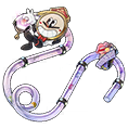

추천 광추
댄스! 댄스! 댄스!
필살기 → 전원 행동 게이지 +24%
효과 자세히
딜러가 다시 행동해야 하는 타이밍에 사용.
맞물린 톱니
공격 또는 피격 → 에너지 +8pt
효과 자세히
턴마다 1회.
아직 전투는 끝나지 않았다
회복효율 +10% · SP 반환
효과 자세히
아군 대상 필살기 2회마다 SP +1. 스킬 후 다음 아군 피해 +30% 1턴.
행성과의 만남
같은 속성 피해 +24%
효과 자세히
장착자와 같은 속성 피해를 주는 아군에게 적용.
추천 유물
가상공간을 누비는 메신저 4 · 생명의 바커 공 2
- 머리
 주옵션HP부옵션속도 · HP% · 방어력% · 효과 저항
주옵션HP부옵션속도 · HP% · 방어력% · 효과 저항 - 손
 주옵션공격력부옵션속도 · HP% · 방어력% · 효과 저항
주옵션공격력부옵션속도 · HP% · 방어력% · 효과 저항 - 몸통
 주옵션HP% / 방어력%부옵션속도 · HP% (주옵션 제외) · 방어력% (주옵션 제외) · 효과 저항
주옵션HP% / 방어력%부옵션속도 · HP% (주옵션 제외) · 방어력% (주옵션 제외) · 효과 저항 - 다리
 주옵션속도부옵션HP% · 방어력% · 효과 저항
주옵션속도부옵션HP% · 방어력% · 효과 저항 - 구체
 주옵션HP% / 방어력%부옵션속도 · HP% (주옵션 제외) · 방어력% (주옵션 제외) · 효과 저항
주옵션HP% / 방어력%부옵션속도 · HP% (주옵션 제외) · 방어력% (주옵션 제외) · 효과 저항 - 매듭
 주옵션에너지 회복효율부옵션속도 · HP% · 방어력% · 효과 저항
주옵션에너지 회복효율부옵션속도 · HP% · 방어력% · 효과 저항
이 조합을 추천하는 이유
메신저 아군 대상 필살기 후 파티 속도 +12% 1턴. 바커 공 속도 120 → 첫 행동 게이지 +40%.
가상공간을 누비는 메신저 4 · 꿈의 땅 페나코니 2
- 머리
주옵션HP부옵션속도 · HP% · 방어력% · 효과 저항
- 손
주옵션공격력부옵션속도 · HP% · 방어력% · 효과 저항
- 몸통
주옵션HP% / 방어력%부옵션속도 · HP% (주옵션 제외) · 방어력% (주옵션 제외) · 효과 저항
- 다리
주옵션속도부옵션HP% · 방어력% · 효과 저항
- 구체
 주옵션HP% / 방어력%부옵션속도 · HP% (주옵션 제외) · 방어력% (주옵션 제외) · 효과 저항
주옵션HP% / 방어력%부옵션속도 · HP% (주옵션 제외) · 방어력% (주옵션 제외) · 효과 저항 - 매듭

주옵션에너지 회복효율부옵션속도 · HP% · 방어력% · 효과 저항
이 조합을 추천하는 이유
메신저로 팀 가속. 페나코니 회복효율 +5% · 화염 동료 피해 +10%.
이 정도면 잘 키웠다
선택한 세팅 기준 · —는 확인된 수치 없음
바커 공과 필살기로 파티의 첫 행동을 빠르게 만듭니다.
| 스탯 | 추천 스탯 | 준종결 | 종결 |
|---|---|---|---|
| 속도 | 160+ | — | — |
| 에너지 회복효율 | 124.44%+[1]기본 100%에 5성 +15 매듭의 에너지 회복효율 19.44%p와 「생명의 바커 공」 2세트의 5%p를 더한 총량입니다. | — | — |
세팅 기준·출처
공개 가이드에서 이 세팅의 준종결 또는 종결 수치를 확인하지 못했습니다.
스탯 조건과 각주
- 에너지 회복효율 · 추천 스탯 기본 100%에 5성 +15 매듭의 에너지 회복효율 19.44%p와 「생명의 바커 공」 2세트의 5%p를 더한 총량입니다. ↑
성혼과 추천 돌파
1돌 타격 1회 증가 · 4돌 충전 2스택에서 회복효율 +15% · 6돌 스택 유지 개선.
1전투 스킬 타격 +1회추천
무작위 적에게 추가 피해 1회.
2필살기 → 다음 턴 충전 유지
아스타의 다음 턴 특성 충전 스택이 감소하지 않음.
3전투 스킬·특성 +2
스킬·특성 레벨 상한 각각 15.
4충전 2스택 이상 → 회복효율 +15%추천
오로라가 나타날 때
5필살기 +2 · 일반 공격 +1
필살기·일반 공격 레벨 상한 각각 15·10.
6턴당 충전 스택 감소량 −1추천
충전 공격력 버프를 오래 유지.
추천 파티


기본 운영과 행적
다른 적을 맞혀 충전하기
가능하면 화염 약점 적을 대상으로 전투 스킬 → 충전 중첩 → 딜러 행동 전 필살기.
- 서로 다른 적 1기당 충전 1스택 · 화염 약점 적은 1스택 추가. 아스타 두 번째 턴부터 충전 감소.
행적 육성 순서
특성·필살기 → 전투 스킬 → 일반 공격
아하 속도 계산기 →기준과 출처 · 2026-11-27
4.7 데이터 · Prydwen 장비 참고 · 자료실 편성 예시